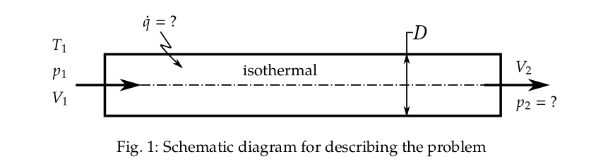

Given:
Methane gas flow (
\( \gamma = \) 1.32,
\( \hat{m} = \) 16 kg/kmol ),
circular pipe: \( D = \) 4 cm,
\( T_{1} = \) 200 K,
\( p_{1} = \) 250 kPa,
\( V_{1} = \) 30 m/s,
Isothermal \( \implies T_{2} = T_{1} = \) 200 K,
\( V_{2} = \) 35 m/s.
To calculate: \( p_{2}=?, \dot{q}=? \)
The schematic diagram of the problem description is shown in Fig. 1.

The gas constant, \( R \), of methane can be calculated using the universal gas constant, \( R_{u} = \) 8314 J/kmol-K, and the molar mass of methane, \( \hat{m} = \) 16 kg/kmol, as,
The density of the gas at inlet can be calculated using the equation of state for the perfect gas,
The mass flow rate through the pipe is,
Using the conservation of energy equation,
\[ c_{p}T_{1}+\frac{V_{1}^{2}}{2}+\frac{\dot{q}}{\dot{m}}=c_{p}T_{2}+\frac{V_{2}^{2}}{2} \] Since \( T_{1}=T_{2} \), \[ \dot{q}=\frac{\dot{m}}{2}\left(V_{2}^{2}-V_{1}^{2}\right) \]By conservation of mass for a steady flow, the mass flow rate at the exit is equal to mass flow rate at the inlet.
The mass flow rate can be used to calculate the density at the exit,
\[ \rho_{1}\,A\,V_{1}=\rho_{2}\,A\,V_{2} \] \[ \rho_{2}=\frac{\rho_{1}\,V_{1}}{V_{2}} \]Using the perfect gas equation, for an isentropic flow,
\[ \frac{p_{1}}{\rho_{1}}=\frac{p_{2}}{\rho_{2}} \]Please note that the momentum equation is not used here for calculating the pressure, as the flow is not isentropic. Hence, frictional forces need to be considered if momentum equation is to be used.